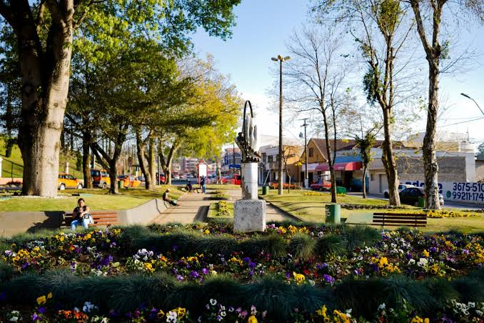
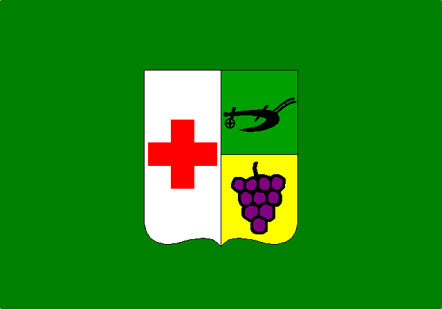
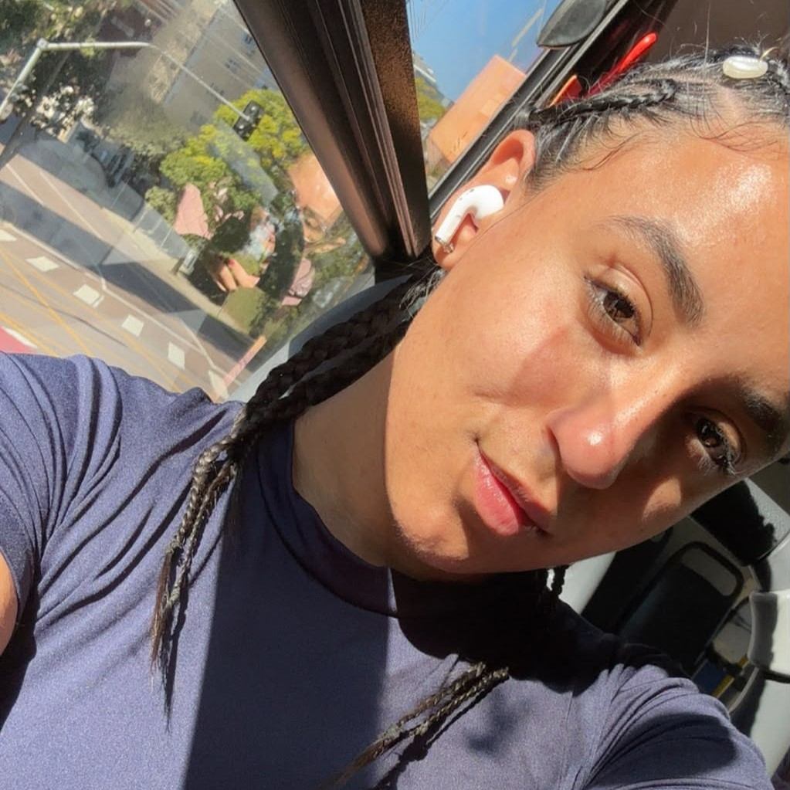
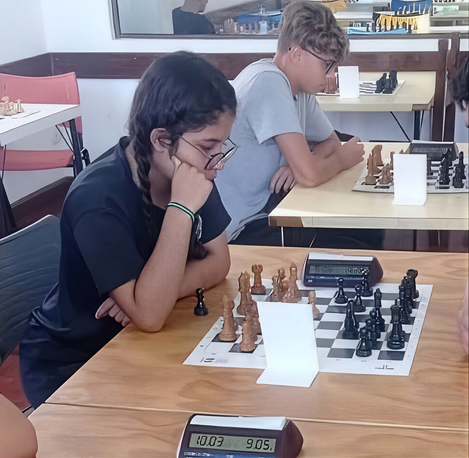

Bem-vindo ao GRIOT- Colombo
Há um sol que fecunda esta terra GRIOT!
A história de Colombo é resultado da contribuição de diferentes povos e culturas que ajudaram a construir o município ao longo do tempo. Nesse cenário, a valorização da população negra e de sua herança cultural fortalece o reconhecimento da diversidade, preserva memórias importantes e incentiva a construção de uma sociedade mais inclusiva e consciente de sua própria história.

Conteúdos que valorizam a Cultura Negra
Acesse a cultura afro-brasileira colombense.



Músicas
Textos
![Capa do livro [Nome do Livro]](https://cdhjzkmlucahtllfpdlx.supabase.co/storage/v1/object/public/Biblioteca/CapasImagem/semcapa.jpg)
×